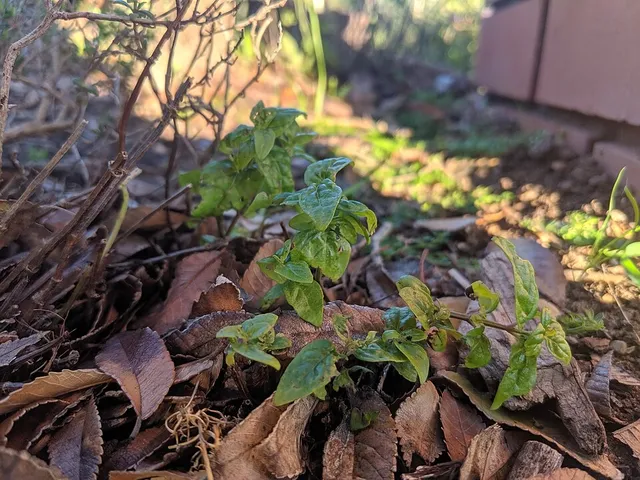

Drinks
River mint tea
River mint tea is made with wild river mint.

How do you make river mint tea?
Fresh river mint steeped in hot water.
Wild ingredients
- River mint (Mentha australis): in season September to April
Watch the recipe

Video: The Mediterranean Dish on YouTube